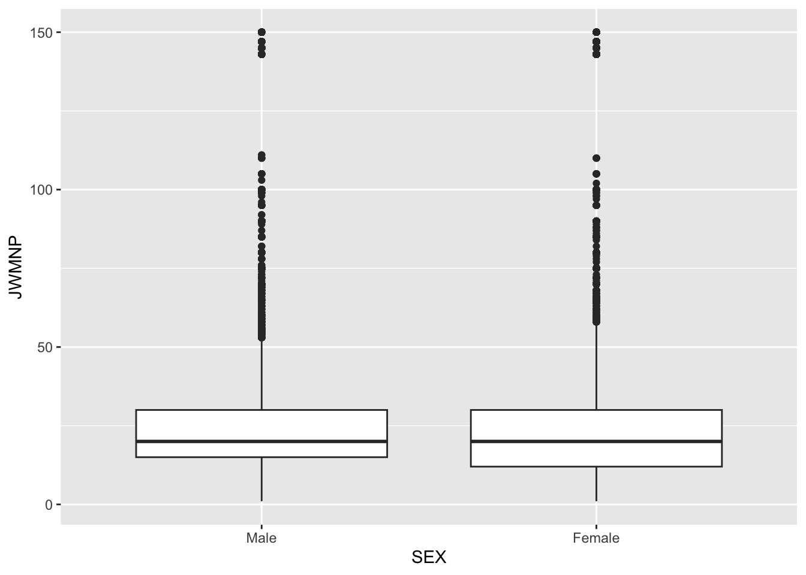
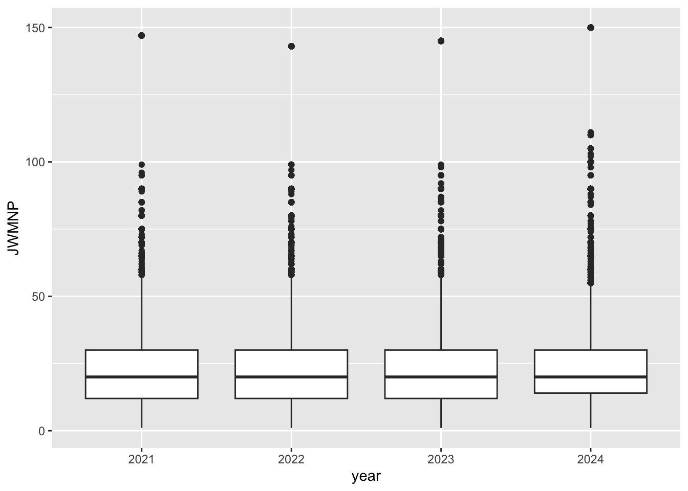

library(httr)
library(jsonlite)
library(tidyverse)
library(lubridate)ST 558 Project 1
Introduction
For this project, I am using data from the Census PUMS API. I will be creating functions to pull and clean the data, summarize different variables, and make plots. I also want the functions to work with different years and geographic areas so I can easily compare the data in different ways.
Part 1: Data Processing
Parsing Variable Values
Before pulling the actual PUMS data, I first need some information about the variables I will be using. The Census API has JSON files that give the possible values and descriptions for each variable. I will save this information so I can use it later when cleaning the data.
I am starting with 2024 so I can see how the variable information is set up before making a function that will work for all four years.
# Get the variable info for 2024
url_2024 <- "https://api.census.gov/data/2024/acs/acs1/pums/variables.json"
response_2024 <- GET(url_2024)
variables_2024 <- content(
response_2024,
as = "parsed"
)
# Variables I need for the project
needed_vars <- c(
"AGEP", "GASP", "GRPIP", "JWAP", "JWDP", "JWMNP",
"PWGTP", "FER", "HHL", "SCH", "SCHL", "SEX",
"STATE", "REGION", "DIVISION"
)
selected_2024 <- variables_2024$variables[needed_vars]Now that I know how the variable information is stored, I can make a function to do this for each year. One thing I have to account for is that the state variable is called ST in 2021 and 2022, but STATE in 2023 and 2024.
get_variable_info <- function(year) {
# make the url for that year
url <- paste0(
"https://api.census.gov/data/",
year,
"/acs/acs1/pums/variables.json"
)
response <- GET(url)
variable_data <- content(response, as = "parsed")
# State has a different name in 2021 and 2022
state_var <- if (year %in% c(2021, 2022)) "ST" else "STATE"
# Variables needed for the project
needed_vars <- c(
"AGEP", "GASP", "GRPIP", "JWAP", "JWDP", "JWMNP",
"PWGTP", "FER", "HHL", "SCH", "SCHL", "SEX",
state_var, "REGION", "DIVISION"
)
variable_data$variables[needed_vars]
}The function works for both versions of the state variable, so I can use it for all four years. I will save everything together in the data folder so I can use it again later without having to pull it every time.
# Get the variable info for each year
variable_info_2021 <- get_variable_info(2021)
variable_info_2022 <- get_variable_info(2022)
variable_info_2023 <- get_variable_info(2023)
variable_info_2024 <- get_variable_info(2024)
# Put everything together and save it
variable_info <- list(
`2021` = variable_info_2021,
`2022` = variable_info_2022,
`2023` = variable_info_2023,
`2024` = variable_info_2024
)
saveRDS(variable_info, "data/variable_info.rds")Parsing API Data
Now I can start working with the actual PUMS data. I am going to start with a simple API request to see what the returned data looks like and then create a function to turn it into a tibble.
# Try a basic PUMS API call
pums_response <- GET(
"https://api.census.gov/data/2024/acs/acs1/pums",
query = list(
get = "AGEP,PWGTP,SEX",
`for` = "state:37",
key = Sys.getenv("CENSUS_API_KEY")
)
)
# Check that the request worked
status_code(pums_response)[1] 200The API returns the variable names in the first row and the actual data in the rows after that. I will make a small helper function to separate those and return the data as a tibble.
response_to_tibble <- function(response) {
# Read the api response
api_data <- content(
response,
as = "parsed",
type = "application/json",
encoding = "UTF-8",
simplifyVector = FALSE
)
# First row has the column names
column_names <- unlist(api_data[[1]])
# The rest are the actual data
data_rows <- lapply(api_data[-1], unlist)
data_matrix <- do.call(rbind, data_rows)
census_tibble <- as_tibble(
data_matrix,
.name_repair = "minimal"
)
names(census_tibble) <- column_names
census_tibble
}The helper function gets the data into a tibble, but the variables still need to be converted to the right types. I will handle that in the main function.
JWAP and JWDP are a little different from the other numeric variables because the Census stores them as codes for ranges of time. I will use the middle of each time range as the value, so I made a helper function to calculate the midpoint.
get_time_midpoint <- function(time_range) {
# Missing times should just be NA
if (
length(time_range) == 0 ||
is.na(time_range) ||
time_range == ""
) {
return(NA)
}
# Clean up the AM and PM
time_range <- str_replace_all(
time_range,
c("a\\.m\\." = "AM", "p\\.m\\." = "PM")
)
# Split the time range
times <- str_split(time_range, " to ")[[1]]
# Turn both into times
start_time <- parse_date_time(times[1], orders = "I:M p")
end_time <- parse_date_time(times[2], orders = "I:M p")
# Get the time midpoint
midpoint <- start_time + (end_time - start_time) / 2
midpoint
}Next, I will make the main function for pulling the PUMS data. I want the function to let me choose the year, variables, and geographic area while also checking that the inputs are valid. It will also take care of converting the variables to the right types.
get_pums_data <- function(
year = 2024,
numeric_vars = c("AGEP", "PWGTP"),
categorical_vars = "SEX",
geography = "State",
geography_value = NULL
) {
# Check the year
valid_years <- c(2021, 2022, 2023, 2024)
if (!year %in% valid_years) {
stop("Year must be 2021, 2022, 2023, or 2024.")
}
# Numeric variable options
valid_numeric_vars <- c(
"AGEP", "GASP", "GRPIP", "JWAP",
"JWDP", "JWMNP", "PWGTP"
)
if (!all(numeric_vars %in% valid_numeric_vars)) {
stop("One or more numeric variables are invalid.")
}
if (!any(numeric_vars != "PWGTP")) {
stop("At least one numeric variable besides PWGTP must be selected.")
}
# always include the weight
numeric_vars <- unique(c(numeric_vars, "PWGTP"))
# Categorical variable options
valid_categorical_vars <- c(
"FER", "HHL", "SCH", "SCHL", "SEX"
)
if (length(categorical_vars) == 0) {
stop("At least one categorical variable must be selected.")
}
if (!all(categorical_vars %in% valid_categorical_vars)) {
stop("One or more categorical variables are invalid.")
}
# Check the geography
valid_geographies <- c("Region", "Division", "State")
if (length(geography) != 1) {
stop("Exactly one geography level must be selected.")
}
if (!geography %in% valid_geographies) {
stop("Geography must be Region, Division, or State.")
}
# Use the variable info I saved earlier
variable_info <- readRDS("data/variable_info.rds")
year_info <- variable_info[[as.character(year)]]
# Set up the geography
if (geography == "State") {
geography_var <- if (year %in% c(2021, 2022)) "ST" else "STATE"
geography_values <- year_info[[geography_var]]$values$item
default_value <- "37"
} else if (geography == "Region") {
geography_var <- "REGION"
geography_values <- year_info$REGION$values$item
default_value <- "3"
} else {
geography_var <- "DIVISION"
geography_values <- year_info$DIVISION$values$item
default_value <- "5"
}
# Use my defaults if nothing was entered
if (is.null(geography_value)) {
geography_value <- default_value
}
# Make sure the value is valid
if (
geography_value != "all" &&
!geography_value %in% names(geography_values)
) {
stop("The selected geography value is invalid.")
}
# Variables to pull
requested_vars <- unique(c(
numeric_vars,
categorical_vars,
geography_var
))
# Make the API url
api_url <- paste0(
"https://api.census.gov/data/",
year,
"/acs/acs1/pums"
)
# Census uses * when we want every value
if (geography_value == "all") {
api_geography_value <- "*"
} else {
api_geography_value <- geography_value
}
geography_query <- paste0(
tolower(geography),
":",
api_geography_value
)
# Pull the data
response <- GET(
api_url,
query = list(
get = paste(requested_vars, collapse = ","),
`for` = geography_query,
key = Sys.getenv("CENSUS_API_KEY")
)
)
# Turn it into a tibble
census_data <- response_to_tibble(response)
# Regular numeric variables
regular_numeric_vars <- numeric_vars[
!numeric_vars %in% c("JWAP", "JWDP")
]
# Make them numeric
for (var in regular_numeric_vars) {
census_data[[var]] <- as.numeric(census_data[[var]])
}
# See which time variables were selected
time_vars <- numeric_vars[
numeric_vars %in% c("JWAP", "JWDP")
]
# Convert the time codes
for (var in time_vars) {
time_values <- year_info[[var]]$values$item
time_ranges <- sapply(
census_data[[var]],
function(code) {
# 0 means there is no time
if (is.na(code) || code == "" || code == "0") {
return(NA_character_)
}
# Make the codes match the saved values
code <- str_pad(
code,
width = 3,
side = "left",
pad = "0"
)
# Anything that doesn't match is missing
if (!code %in% names(time_values)) {
return(NA_character_)
}
unlist(time_values[[code]])
}
)
census_data[[var]] <- do.call(
c,
lapply(
time_ranges,
get_time_midpoint
)
)
}
# Change category codes to labels
for (var in categorical_vars) {
category_values <- year_info[[var]]$values$item
census_data[[var]] <- factor(
census_data[[var]],
levels = names(category_values),
labels = unname(unlist(category_values))
)
}
# The API adds the geography again, so remove the extra column
api_geography_var <- tolower(geography)
if (
api_geography_var %in% names(census_data) &&
api_geography_var != geography_var
) {
census_data <- census_data |>
select(-all_of(api_geography_var))
}
# Add the census class
class(census_data) <- c(
"census",
class(census_data)
)
census_data
}Now that the function is set up, I can try it with the default options. This will pull the 2024 data for North Carolina and return the variables with the types I set up above.
example_data <- get_pums_data()
example_data# A tibble: 114,270 × 4
AGEP PWGTP SEX STATE
<dbl> <dbl> <fct> <chr>
1 23 60 Male 37
2 21 49 Male 37
3 20 24 Male 37
4 79 54 Female 37
5 18 79 Male 37
6 19 54 Female 37
7 22 58 Female 37
8 18 17 Female 37
9 22 30 Male 37
10 67 37 Female 37
# ℹ 114,260 more rowsCombining Years
The function above only pulls one year at a time, but I also want to be able to look at multiple years together. I will make another function that uses the single-year function for each year I choose and then combines the results. I will also add a year column so I can tell which year each observation came from.
get_multiple_years <- function(
years = "all",
numeric_vars = c("AGEP", "PWGTP"),
categorical_vars = "SEX",
geography = "State",
geography_value = NULL
) {
valid_years <- c(2021, 2022, 2023, 2024)
# Use all four years if all is selected
if (length(years) == 1 && years == "all") {
years <- valid_years
}
# Check the years
if (!all(years %in% valid_years)) {
stop("Years must be 2021, 2022, 2023, 2024, or all.")
}
year_data <- list()
# Pull each year and add it to the list
for (i in seq_along(years)) {
current_year <- years[i]
data <- get_pums_data(
year = current_year,
numeric_vars = numeric_vars,
categorical_vars = categorical_vars,
geography = geography,
geography_value = geography_value
)
# State was called ST in 2021 and 2022
if ("ST" %in% names(data)) {
names(data)[names(data) == "ST"] <- "STATE"
}
data$year <- current_year
year_data[[i]] <- data
}
# Combine everything
combined_data <- bind_rows(year_data)
combined_data$year <- factor(combined_data$year)
class(combined_data) <- c(
"census",
class(combined_data)
)
combined_data
}Part 2: Generic Functions
Summary Function
Now that the data can be pulled and combined, I want an easier way to summarize it. I will create a summary function specifically for census objects. For numeric variables, I will use the person weights to calculate weighted means and standard deviations. For categorical variables, I will use the weights to get counts for each category.
summary.census <- function(
object,
numeric_vars = NULL,
categorical_vars = NULL,
...
) {
# If no numeric variables are picked, use all of them
if (is.null(numeric_vars)) {
numeric_vars <- names(object)[sapply(object, is.numeric)]
# Don't include the weight or time variables
numeric_vars <- numeric_vars[
!numeric_vars %in% c("PWGTP", "JWAP", "JWDP")
]
}
# If no categorical variables are picked, use all factors
if (is.null(categorical_vars)) {
categorical_vars <- names(object)[sapply(object, is.factor)]
}
results <- list()
# Numeric summaries
for (var in numeric_vars) {
values <- object[[var]]
weights <- object$PWGTP
# Only use rows that aren't missing
keep <- !is.na(values) & !is.na(weights)
values <- values[keep]
weights <- weights[keep]
weighted_mean <- sum(values * weights) / sum(weights)
weighted_sd <- sqrt(
sum(values^2 * weights) / sum(weights) -
weighted_mean^2
)
results[[var]] <- c(
mean = weighted_mean,
sd = weighted_sd
)
}
# Categorical counts
for (var in categorical_vars) {
values <- object[[var]]
weights <- object$PWGTP
weighted_counts <- tapply(
weights,
values,
sum,
na.rm = TRUE
)
results[[var]] <- weighted_counts
}
results
}Plot Function
I also want a quick way to compare a numeric variable across different categories. I will create a plot function for census objects that makes a weighted boxplot using the person weights.
plot.census <- function(
x,
categorical_var,
numeric_var,
...
) {
# Make sure the variables are the right types
if (!is.factor(x[[categorical_var]])) {
stop("The categorical variable must be a factor.")
}
if (!is.numeric(x[[numeric_var]])) {
stop("The numeric variable must be numeric.")
}
# Make the weighted boxplot
ggplot(
x,
aes(
x = get(categorical_var),
y = get(numeric_var),
weight = PWGTP
)
) +
geom_boxplot() +
labs(
x = categorical_var,
y = numeric_var
)
}Investigation
Now that all of the functions are working, I can use them to look at the PUMS data in a few different ways. I am going to compare some of the variables across years and groups and use the summary and plot functions I created above to look for any differences or patterns in the data.
Commuting Patterns in North Carolina
I decided to look at commuting patterns in North Carolina and see if there are any differences across years or between males and females. I will start by pulling age and travel time to work for all four years.
# Get NC commuting data for all four years
commute_data <- get_multiple_years(
years = "all",
numeric_vars = c("AGEP", "JWMNP", "PWGTP"),
categorical_vars = "SEX",
geography = "State",
geography_value = "37"
)
glimpse(commute_data)Rows: 439,757
Columns: 6
$ AGEP <dbl> 21, 58, 20, 40, 21, 20, 41, 18, 19, 19, 74, 18, 25, 19, 18, 93, …
$ JWMNP <dbl> 5, 0, 0, 0, 5, 0, 0, 0, 0, 0, 0, 0, 10, 0, 0, 0, 5, 0, 0, 0, 10,…
$ PWGTP <dbl> 78, 9, 32, 6, 119, 65, 11, 67, 19, 100, 58, 85, 82, 69, 57, 1, 9…
$ SEX <fct> Male, Female, Female, Female, Male, Male, Male, Female, Male, Ma…
$ STATE <chr> "37", "37", "37", "37", "37", "37", "37", "37", "37", "37", "37"…
$ year <fct> 2021, 2021, 2021, 2021, 2021, 2021, 2021, 2021, 2021, 2021, 2021…First, I will use my summary function to get an overall look at the people with a reported travel time and see how the data are split across sex and year. Since JWMNP has a lot of values equal to 0, I am going to leave those out when looking specifically at commute times. This way the commute time summaries are based on people who have a reported travel time greater than 0.
# Only keep people with a commute time
commute_workers <- commute_data |>
filter(JWMNP > 0)
commute_summary <- summary(commute_workers)
commute_summary$AGEP
mean sd
41.61575 14.79837
$JWMNP
mean sd
25.20114 21.11203
$SEX
Male Female
9162087 8010039
$year
2021 2022 2023 2024
3963304 4263763 4393552 4551507 After removing the 0 travel times, the average commute time is about 25.2 minutes. The standard deviation is about 21.1 minutes, so there is quite a bit of variation in how long people are commuting. The average age for this group is about 41.6 years. The weighted counts also increase across the four years, with the largest count in 2024.
I also want to see if commute times look different between males and females. I can use my plot function to compare the distributions.
# Compare commute times by sex
plot(
commute_workers,
categorical_var = "SEX",
numeric_var = "JWMNP"
)
The commute time distributions for males and females look pretty similar. Their medians are almost the same and most of the values fall within a similar range. Both groups also have quite a few longer commute times that show up as outliers, so there does not seem to be a major difference between the two groups from this plot.
Next, I want to see if commute times changed much across the four years.
# Compare commute times across years
plot(
commute_workers,
categorical_var = "year",
numeric_var = "JWMNP"
)
The commute time distributions stay pretty similar from 2021 through 2024. The medians are close across all four years, although 2024 looks slightly higher. There are also longer commute time outliers in every year, so overall the distributions do not seem to have changed very much.
To get a more exact comparison, I will also use my summary function separately for each year.
# Look at average commute time for each year
year_summaries <- lapply(
levels(commute_workers$year),
function(current_year) {
year_data <- commute_workers |>
filter(year == current_year)
summary(
year_data,
numeric_vars = "JWMNP",
categorical_vars = character(0)
)
}
)
names(year_summaries) <- levels(commute_workers$year)
year_summaries$`2021`
$`2021`$JWMNP
mean sd
24.57827 21.03442
$`2022`
$`2022`$JWMNP
mean sd
25.11906 20.98016
$`2023`
$`2023`$JWMNP
mean sd
25.26310 21.07052
$`2024`
$`2024`$JWMNP
mean sd
25.76062 21.32595 The weighted average commute time increased a little each year. It went from about 24.6 minutes in 2021 to 25.8 minutes in 2024, which is an increase of a little over one minute. This also matches the boxplots above, where the commute times looked pretty similar across the four years but were slightly higher in 2024.
Age and School Enrollment in the South
For one more comparison, I wanted to try the functions with a different geographic level and different variables. This time, I will look at age and school enrollment in the South using the 2024 data.
# Get 2024 data for the South
south_data <- get_pums_data(
year = 2024,
numeric_vars = c("AGEP", "PWGTP"),
categorical_vars = "SCH",
geography = "Region",
geography_value = "3"
)
# Summarize age and school enrollment
summary(south_data)$AGEP
mean sd
39.46713 23.30518
$SCH
N/A (less than 3 years old)
4347991
Yes, private school or college or home school
5565903
No, has not attended in the last 3 months
96490077
Yes, public school or public college
26261722 The weighted average age in the South in 2024 was about 39.5 years. The largest school enrollment group was people who had not attended school in the last three months. There were also more people attending public school or public college than private school, college, or home school.
Investigation Takeaways
Overall, the functions made it pretty easy to look at the Census data in a few different ways without having to rewrite the same code each time. For the North Carolina commuting data, average travel time to work increased slightly from 2021 to 2024, although the distributions were pretty similar across the four years. The comparison by sex also showed similar commute time distributions for males and females.
I also tried the functions with a different geographic level by looking at the South in 2024. The weighted average age was about 39.5 years, and the largest school enrollment group was people who had not attended school in the last three months. This was a useful way to check that the functions could handle different variables and geographic selections instead of only the North Carolina example.